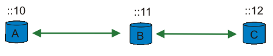

- OLSRd kurulduğunda ve yapılandırıldığında, root olarak şöyle başlatılır:
# olsrd
/etc/olsrd.conf'daki tüm ayarlar komut satırı seçenekleri ile değiştirilebilir:# olsrd -i eth1 -ipv6 -d 1
IPv6'yı kullanarak hata iletileriyle birlikte eth1 arayüzünde olsrd dinlemeye başlayacak.olsrd'yi başlatıyoruz:# olsrd -i eth1 -d 1 -ipv6 *** UniK olsrd-0.4.3 *** hello interval = 2.00 hello int nonwireless: = 4.00 tc interval = 5.00 polling interval = 0.10 neighbor_hold_time = 6.00 neighbor_hold_time_nw = 12.00 topology_hold_time = 15.00 tos setting = 16 hna_interval = 15.00 mid_interval = 5.00 Willingness set to 3 - next update in 20.000000 secs Using IP version 6 Using multicast address ff05::15 ---- Interface configuration ---- eth1: Address: fec0:106:2700::10 Multicast: ff05::15 Interface eth1 set up for use with index 0 Main address: fec0:106:2700::10 NEIGHBORS: l=linkstate, m=MPR, w=willingness Thread created - polling every 0.10 seconds neighbor list: 11:43:17.214807 neighbor list: 11:43:19.194967 neighbor list: 11:43:21.395046 neighbor list: 11:43:23.604800 neighbor list: 11:43:25.694875 Bu OLSRd'nin kullandığı tüm ayarları gösterir. Yapılandırma dosyasında (/etc/olsrd.conf) veya komut satırında belirterek bunları değiştirebilirsiniz. Bütün bu ayarların ne anlama geldiğiyle alakalı bir tarif için OLSR RFC'yi okuyun.OLSRd arayüzümüzü buldu. Eğer OLSRd'yi çoklu arayüzlerle kullanıyorsanız , "Çoklu Arayüz Tanımlaması" (ÇAT) iletileri oluşturulacaktır.Eğer OLSRd'yi çoklu arayüzlerle kullanıyorsanız, "temel" adres olarak belirtileni ilk arayüz olarak alacaktır.
Bu OLSRd'nin kullandığı tüm ayarları gösterir. Yapılandırma dosyasında (/etc/olsrd.conf) veya komut satırında belirterek bunları değiştirebilirsiniz. Bütün bu ayarların ne anlama geldiğiyle alakalı bir tarif için OLSR RFC'yi okuyun.OLSRd arayüzümüzü buldu. Eğer OLSRd'yi çoklu arayüzlerle kullanıyorsanız , "Çoklu Arayüz Tanımlaması" (ÇAT) iletileri oluşturulacaktır.Eğer OLSRd'yi çoklu arayüzlerle kullanıyorsanız, "temel" adres olarak belirtileni ilk arayüz olarak alacaktır. Hiçbir konak OLSRd'yi çalıştırmıyorsa, bu liste boştur.Dikkat etmeniz gereken bir diğer husus yönlendirme tablomuza bir kaydın eklendiğidir:
Hiçbir konak OLSRd'yi çalıştırmıyorsa, bu liste boştur.Dikkat etmeniz gereken bir diğer husus yönlendirme tablomuza bir kaydın eklendiğidir:# route -A inet6 Destination: Next Hop Flags Metric Ref Use Iface ... ff05::15/128 ff05::15 UAC 0 1 1 eth1 ...
Bu OLSR'nin OLSR çalıştıran diğer düğümlerle konuşmak için kullandığı IPv6 çoğa gönderim (multicast) adresidir.
- OLSRd'yi tek bir düğüm üzerinde kullanmanın bir anlamı olmayacağından birkaç düğüm ekledik. Bunun ardından "komşu listesi"'nin güncellendiğini göreceksiniz:
neighbor list: 12:55:14.733586 neighbor list: 12:55:18.803585 Willingness for fec0:106:2700::11 changed from 0 to 3 - UPDATING neighbor list: 12:55:22.763585 fec0:106:2700::11:l=0:m=0:w=3[2hlist:] neighbor list: 12:55:26.833589 fec0:106:2700::11:l=1:m=0:w=3[2hlist:] Willingness for fec0:106:2700::12 changed from 0 to 2 - UPDATING neighbor list: 12:55:30.903585 fec0:106:2700::12:l=0:m=0:w=2[2hlist:] fec0:106:2700::11:l=1:m=0:w=3[2hlist:] neighbor list: 12:55:34.863585 fec0:106:2700::12:l=0:m=0:w=2[2hlist:] fec0:106:2700::11:l=1:m=0:w=3[2hlist:] neighbor list: 12:55:39.153586 fec0:106:2700::12:l=1:m=0:w=2[2hlist:fec0:106:2700::11:] fec0:106:2700::11:l=1:m=0:w=3[2hlist:fec0:106:2700::12:] neighbor list: 12:55:43.443605 fec0:106:2700::12:l=1:m=0:w=2[2hlist:fec0:106:2700::11:] fec0:106:2700::11:l=1:m=0:w=3[2hlist:fec0:106:2700::12:]
Yönlendirme tablosunun yeni konaklarla güncellendiğini de göreceksiniz:# route -A inet6 Destination: Next Hop Flags Metric Ref Use Iface ... fec0:106:2700::11/128 :: UH 1 0 0 eth1 fec0:106:2700::12/128 :: UH 1 0 0 eth1 ...
OLSR'nin gerçek güzelliği bir grup düğüm ekleyip onları dolaştırdığınızda ortaya çıkıyor. Hala her birisine doğrudan (eğer kapalılarsa) veya diğer düğümler üzerinden erişebilirsiniz.

- Her düğümün diğer tüm düğümlere erişebilmesi her zaman istenilen durum değildir. "A" ve "B" düğümleri birbirlerine kapsam (radyo) dışı olsunlar diye düğümleri şimdi taşımaya başlayalım. "A" düğümünü "C" düğümünü dinleyemesin diye yeterince uzağa taşıdığımızda, tüm trafik "B" düğümü üzerinden gerçekleşmelidir.

A ve C düğümleri birbirlerine erişmek için B düğümü üzerinden konuşacak şekilde üç düğümümüzü hareket ettiriyoruz.Tavsiye: Düğümleri fiziksel olarak dolaştırmak yerine ip6tables'ı kullanabilirsiniz. MAC-adresini kullanarak tüm paketi "drop" edebilirsiniz. Sadece bir düğümde engellemeniz yeterlidir:# ip6tables -A INPUT -m mac --mac-source XX:XX:XX:XX:XX:XX -j DROP
A konağındaki OLSRd çıktısı şöyle olur:neighbor list: 13:22:35.693587 fec0:106:2700::11:l=1:m=1:w=3[2hlist:fec0:106:2700::12:] neighbor list: 13:22:40.093588 fec0:106:2700::11:l=1:m=1:w=3[2hlist:fec0:106:2700::12:] neighbor list: 13:22:44.053594 fec0:106:2700::11:l=1:m=1:w=3[2hlist:fec0:106:2700::12:] neighbor list: 13:22:48.233594 fec0:106:2700::11:l=1:m=1:w=3[2hlist:fec0:106:2700::12:] neighbor list: 13:22:52.193605 fec0:106:2700::11:l=1:m=1:w=3[2hlist:fec0:106:2700::12:]
B düğümüne doğrudan erişebiliriz; ve B düğümü aracılığıyla C düğümüne erişebiliriz.Yönlendirme tablosu da güncellenir. A düğümünün C düğümüne erişebilmesi için B düğümünü kullanması gerekir:# route -A inet6 Destination: Next Hop Flags Metric Ref Use Iface ... fec0:106:2700::11/128 :: UH 1 1 0 eth1 fec0:106:2700::12/128 fec0:106:2700::11 UGH 2 0 0 eth1 ...